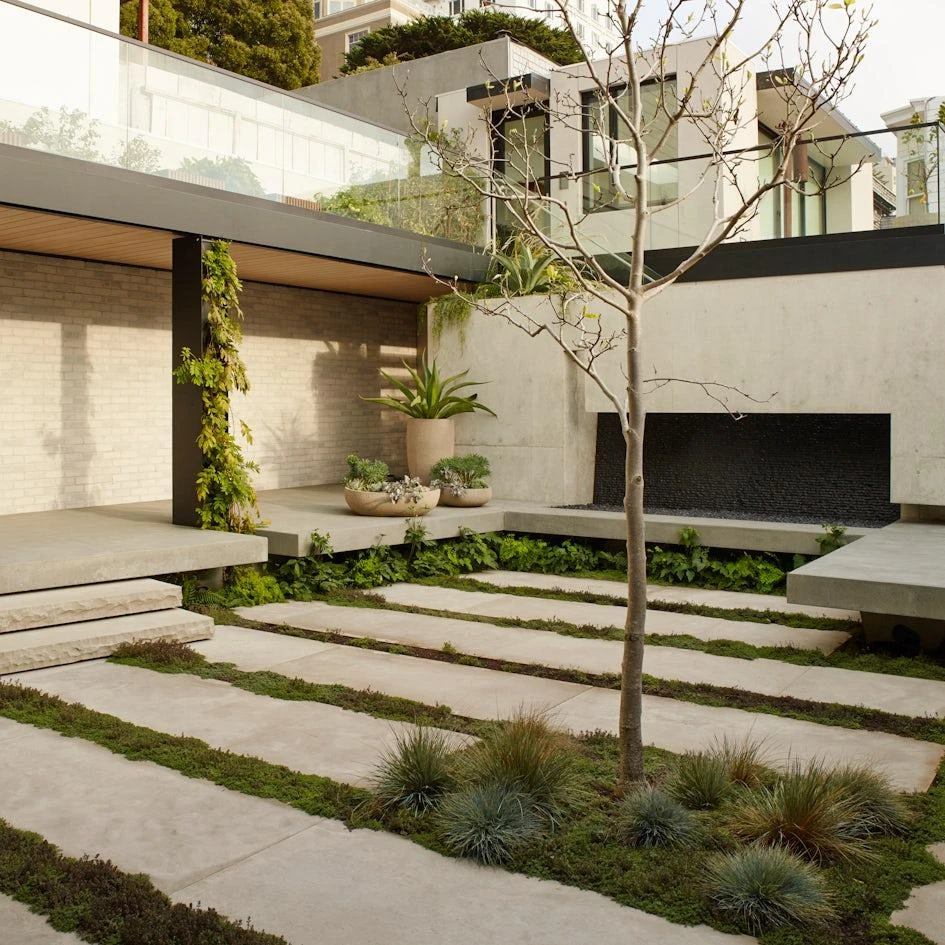
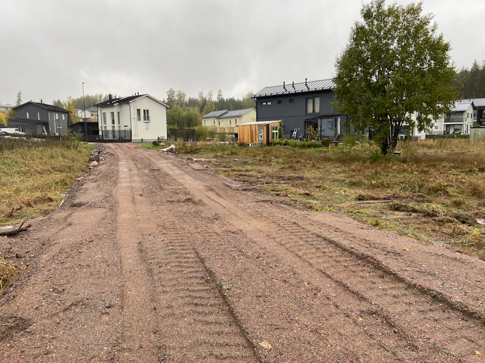
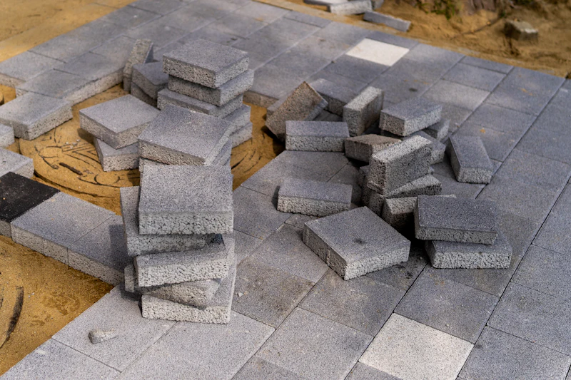

Trinkelių klojimas. Nuo pagrindo iki paskutinės trinkelės.
Įrengiame kiemus, įvažiavimus, takus ir aikšteles. Paruošiame pagrindą, klojame trinkeles ir sutvarkome aplinką.


Ką darome
Visą darbą atliekame patys: nuo grunto kasimo iki siūlių užpildymo. Paspauskite paslaugą ir pamatysite, ką ji apima.

-
Trinkelių klojimasNaujam kiemui, aikštelei ar takui
Parenkame trinkelių storį pagal apkrovą, išlyginame pastelės sluoksnį, klojame pasirinktu raštu, kraštuose pjauname. Siūles užpildome smėliu ir dangą suvibruojame.
-
Kiemo ir įvažiavimo įrengimasKai žvyre provėžos ir purvas
Suplanuojame vietą automobiliams, posūkius ir nuolydžius nuo namo. Įvažiavimui klojame storesnes trinkeles ir darome tvirtesnį pagrindą, nes dangą spaudžia ratai.
-
Pėsčiųjų takaiKai per veją jau išmintas takas
Takai nuo vartų iki durų, aplink namą ar į sodą. Parenkame patogų plotį ir kraštą, kad veja neužaugtų ant tako.
-
Pagrindo paruošimasBeveik visada
Nukasame augalinį sluoksnį, išvežame gruntą, jei reikia, klojame geotekstilę, skaldą tankiname sluoksniais. Nuo to priklauso, ar danga po kelių žiemų neįdubs.
-
Bortelių montavimasKur danga nesiremia į sieną
Kelio, šaligatvio ir vejos borteliai ant betono pado. Jie laiko dangos kraštą, kad trinkelės neišsiskirstytų.
-
Lietaus vandens nuvedimasKai prie namo telkšo balos
Nuolydžiai nuo pastato, linijiniai latakai prie garažo, lietaus šulinėliai, prijungimas prie esamos sistemos ar drenažo.
-
Remontas ir perklojimasKai danga įdubo ar kliba
Išardome įdubusią vietą, sutvarkome pagrindą, sudedame tas pačias trinkeles atgal, suskilusias pakeičiame. Dažnai prireikia po komunikacijų darbų.
Kiemo planuoklis
Įveskite matmenis, pasirinkite medžiagą ir raštą. Planas ir orientacinė kaina persiskaičiuos iš karto. Tikslią kainą pasakysime apžiūrėję vietą.
| Darbai ir medžiagos | Nuo | Iki |
|---|---|---|
| Iš viso | — | — |
Kas įeina į skaičiavimą ir kas ne
Įeina
- Medžiagos su nurodyta atsarga.
- Klojimas su pastelės sluoksniu, pjovimu ir siūlėmis.
- Pagrindo paruošimas, jei pasirinktas: kasimas, grunto išvežimas, skalda.
- Borteliai visam perimetrui, jei pasirinkti.
Neįeina
- Latakai, šulinėliai ir drenažas.
- Senos dangos ardymas ir išvežimas.
- Atraminės sienelės, laiptai, dideli aukščių skirtumai.
- Vejos atkūrimas ir apželdinimas.
Svarbu
Tai orientacinis skaičiavimas, ne pasiūlymas. Kaina priklauso nuo grunto, aukščių, privažiavimo technikai ir gamintojo. Pagrindo storį ir dangos tinkamumą nustatome tik apžiūrėję vietą.
Darbų pavyzdžiai
Pavyzdiniai objektai: kokius darbus atliekame ir kaip juos aprašome sąmatoje.
Prieš ir po: žvyras → trinkelės
Tas pats sklypas iš viršaus: kairėje žvyras su provėžomis ir vanduo prie garažo, dešinėje ta pati vieta įrengus dangą.
- Žvyras ir gruntas iškasti, pagrindas įrengtas iš naujo.
- Prie garažo vartų linijinis latakas.
- Danga atremta į bortelius, takas atskirtas nuo vejos.
Schema, ne nuotrauka. Vilkite slankiklį arba naudokite rodyklių klavišus.
Kas po trinkelėmis
Danga laiko tiek, kiek laiko jos pagrindas. Paspauskite sluoksnį ir pamatysite, kam jis reikalingas.

Kaip vyksta darbai
Įprasto kiemo darbai vietoje dažniausiai trunka nuo kelių dienų iki poros savaičių.

Užklausa
Vieta, apytikslis plotas, ko norite. Planuoklio skaičiavimas padeda susikalbėti greičiau.
Apžiūra
Išmatuojame, įvertiname gruntą, aukščius, vandens nubėgimą ir privažiavimą.
Sąmata ir terminas
Išskaidyta sąmata raštu: darbai, medžiagos, grunto išvežimas.
Žemės darbai
Kasimas, borteliai, skaldos pagrindas. Ilgiausia darbų dalis.
Klojimas
Pastelė, trinkelės, pjovimas, siūlės ir vibravimas.
Sutvarkymas
Išvežame atliekas, sulyginame kraštus prie vejos, kartu apžiūrime darbą.
Apie GRINDAS
Įrengiame kiemus, įvažiavimus ir takus privačių namų savininkams Kauno ir Vilniaus regionuose. Dirbame su savo technika, todėl žemės darbus ir klojimą atlieka ta pati komanda.
- Vienas kontaktas nuo apžiūros iki darbų pabaigos.
- Sąmata raštu, išskaidyta pagal darbus ir medžiagas.
- Mokate už etapus, ne visą sumą iš anksto.
- Sutvarkome aplinką: išvežame gruntą ir atliekas.
Kur dirbame
Kitur, jei objektas didesnis, susitarus.
Dažni klausimai
Kodėl kaina rodoma intervalu?
Internetu nematyti, kiek grunto reikės išvežti, ar sklypas lygus ir ar privažiuos sunkvežimis. Intervalas parodo mastą, tikslią sumą pateikiame po apžiūros.
Kada geriausia kloti trinkeles?
Kai gruntas neįšalęs, dažniausiai nuo balandžio iki lapkričio. Pavasarį kalendorius užsipildo greičiausiai, todėl verta susitarti iš anksto.
Ar galima kloti ant seno pagrindo?
Kartais, jei jis tvirtas ir nesuslūgęs. Įvertiname apžiūros metu. Netinkamą pagrindą reikia įrengti iš naujo, kitaip problemos greitai pasikartos.
Ar klojate mano jau nupirktas trinkeles?
Taip. Prieš pirkdami pasitarkite dėl kiekio ir storio: įvažiavimui reikia storesnių trinkelių, o eglutei daugiau atsargos.
Ar reikia leidimo įvažiavimui?
Savo sklype paprastai ne. Jei įvažiavimas jungiasi prie gatvės ar šaligatvio, tą dalį gali tekti suderinti su savivaldybe.